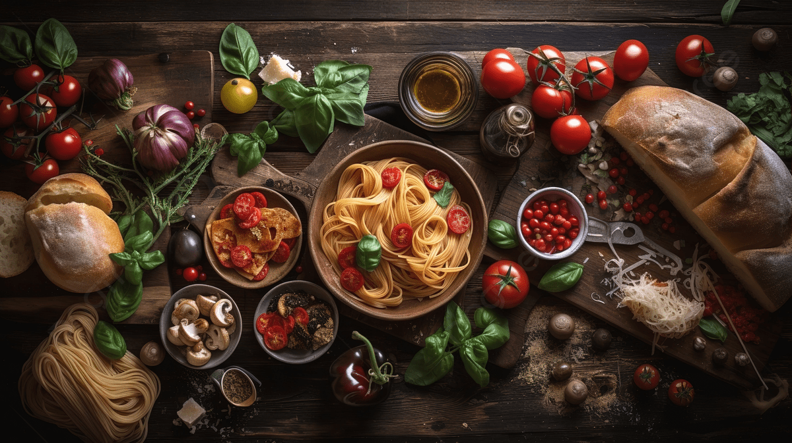

Каждый день — простой и вкусный рецепт из доступных продуктов. Быстрые завтраки, сытные ужины, десерты и кулинарные находки для всей семьи.

Никакой экзотики и труднодоступных ингредиентов — только то, что можно приготовить сегодня вечером из того, что уже есть дома или в ближайшем магазине.
Рецепт — это список продуктов и понятная последовательность действий, без лишних слов.
Ничего дефицитного: всё можно найти в обычном супермаркете рядом с домом.
Публикации выходят регулярно — открыл канал и сразу знаешь, что готовить.
Нажми «Подписаться в MAX» или перейди по ссылке max.ru/channel_chtogotovit.
Один тап — и новые рецепты будут приходить прямо в MAX.
Сохраняй понравившиеся рецепты и возвращайся к ним, когда понадобится.
Новый рецепт — каждый день. Без лишних слов, только то, что действительно стоит приготовить.
Подписаться в MAX